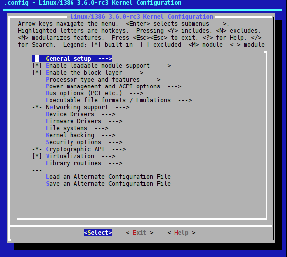
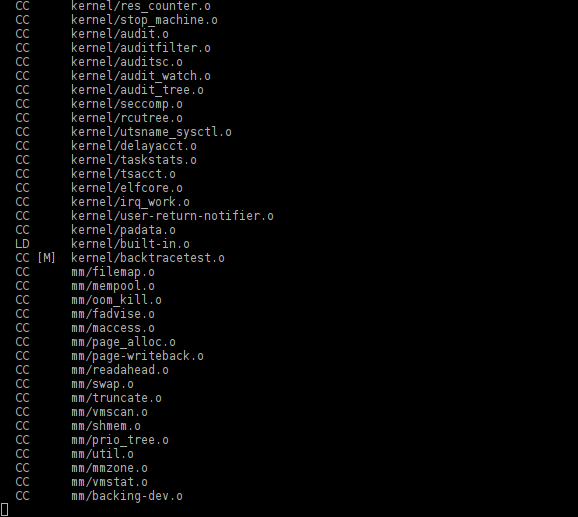

News | Information | Documentation | Installation | Packages | FAQ |
Downloads | Forum | Code | Screenshots | Wallpapers |
|
|
|
ForumSun Jun 25 16:07:12 2017 UTC General: Newstnut  New ISO with LIVE mode available New ISO with LIVE mode availableMon Jun 12 19:48:17 2017 UTC INSTALL: From GITtnut Re: Error in 2nd pass of "build your own"Sun May 28 22:40:06 2017 UTC INSTALL: From GITmyrddin  Re: Error in 2nd pass of "build your own" Re: Error in 2nd pass of "build your own"Sun May 28 17:59:21 2017 UTC INSTALL: From GITtnut  Re: Error in 2nd pass of "build your own" Re: Error in 2nd pass of "build your own"Fri May 26 07:30:33 2017 UTC INSTALL: From GITtnut Re: Error in 2nd pass of "build your own"Fri May 26 03:01:17 2017 UTC INSTALL: From GITmyrddin Error in 2nd pass of "build your own"Sun May 21 19:31:21 2017 UTC Off-Topic: Let's talk about youtnut Re: New nuty user Sun May 21 16:52:07 2017 UTC Off-Topic: Let's talk about youjohn  New nuty user New nuty user Thu May 18 12:19:48 2017 UTC General: Cards: The Package Managertnut  Re: where are CLI commands such as lspci Re: where are CLI commands such as lspciThu May 18 11:48:07 2017 UTC General: Cards: The Package Managermyrddin Re: where are CLI commands such as lspci |
Thu Mar 30 10:10:32 2017 UTC How to compile and install your own kernelContentsIntroductionThis topic can be applied to any distribution and not only to NuTyX. It explains how to compile and install a customized kernel, should you wish to do so. They are many reasons to compile your own kernel. One good reason could be to reduce the size of the kernel as much as possible and optimize it for your own hardware. This will greatly speed up the boot process. If you are using NuTyX, make sure you get devel packages set: get cards.devel Checking the hardwareWe start by checking what kind of hardware we are running on: lspci 00:00.0 Host bridge: Intel Corporation Atom Processor D2xxx/N2xxx DRAM Controller (rev 03) 00:02.0 VGA compatible controller: Intel Corporation Atom Processor D2xxx/N2xxx Integrated Graphics Controller (rev 09) 00:1b.0 Audio device: Intel Corporation NM10/ICH7 Family High Definition Audio Controller (rev 02) 00:1c.0 PCI bridge: Intel Corporation NM10/ICH7 Family PCI Express Port 1 (rev 02) 00:1c.1 PCI bridge: Intel Corporation NM10/ICH7 Family PCI Express Port 2 (rev 02) 00:1c.2 PCI bridge: Intel Corporation NM10/ICH7 Family PCI Express Port 3 (rev 02) 00:1d.0 USB controller: Intel Corporation NM10/ICH7 Family USB UHCI Controller #1 (rev 02) 00:1d.1 USB controller: Intel Corporation NM10/ICH7 Family USB UHCI Controller #2 (rev 02) 00:1d.2 USB controller: Intel Corporation NM10/ICH7 Family USB UHCI Controller #3 (rev 02) 00:1d.3 USB controller: Intel Corporation NM10/ICH7 Family USB UHCI Controller #4 (rev 02) 00:1d.7 USB controller: Intel Corporation NM10/ICH7 Family USB2 EHCI Controller (rev 02) 00:1e.0 PCI bridge: Intel Corporation 82801 Mobile PCI Bridge (rev e2) 00:1f.0 ISA bridge: Intel Corporation NM10 Family LPC Controller (rev 02) 00:1f.2 SATA controller: Intel Corporation NM10/ICH7 Family SATA Controller [AHCI mode] (rev 02) 00:1f.3 SMBus: Intel Corporation NM10/ICH7 Family SMBus Controller (rev 02) 01:00.0 Ethernet controller: Realtek Semiconductor Co., Ltd. RTL8101E/RTL8102E PCI Express Fast Ethernet controller (rev 05) 02:00.0 Network controller: Broadcom Corporation BCM4313 802.11b/g/n Wireless LAN Controller (rev 01) 03:00.0 Unassigned class [ff00]: Realtek Semiconductor Co., Ltd. RTS5209 PCI Express Card Reader (rev 01) What we see here:
Download the sources of the kernelTo be able to compile a kernel, we need the sources of a kernel version. At the time of writing, version 3.17.4 is available. We will therefore compile this version... Open a terminal and type the command: wget http://www.kernel.org/pub/linux/kernel/v3.x/linux-3.17.4.tar.xz The sources are downloaded into your personnal folder. --2012-09-01 17:49:53-- http://www.kernel.org/pub/linux/kernel/v3.0/testing/linux-3.17.4.tar.xz Resolving www.kernel.org... 149.20.4.69, 149.20.20.133 Connecting to www.kernel.org|149.20.4.69|:80...connected. HTTP request sent, awaiting response...200 OK Size: 82259123 (78M) [application/x-bzip2] Saved in : «linux-3.17.4.tar.bz2» 100%[=============================>] 82.259.123 2,55M/s ds 37s 2012-09-01 17:50:31 (2,13 MB/s) - «linux-3.17.4.tar.xz» saved [82259123/82259123] Extract the sources from the downloaded kernelWe extract the sources from our new downloaded kernel: tar xf linux-3.17.4.tar.xz After a few moments, a new prompt will come up and the sources are in place. To be able to compile the kernel, we need to be in the kernel directory. Go to the sources directoryType in your terminal: cd linux-3.17.4 We are now ready to launch the magic commands. As a start, I recommend you to consult all the possible options in the compilation: make help|more It will give you ALL the possible options for compile the kernel and its modules. Cleaning targets:
clean - Remove most generated files but keep the config and
enough build support to build external modules
mrproper - Remove all generated files + config + various backup files
distclean - mrproper + remove editor backup and patch files
Configuration targets:
config - Update current config utilising a line-oriented program
nconfig - Update current config utilising a ncurses menu based program
menuconfig - Update current config utilising a menu-based program
xconfig - Update current config utilising a QT based front-end
gconfig - Update current config utilising a GTK based front-end
oldconfig - Update current config utilising a provided .config as base
localmodconfig - Update current config disabling modules not loaded
localyesconfig - Update current config converting local mods to core
silentoldconfig - Same as oldconfig, but quietly, additionally update deps
defconfig - New config with default from ARCH supplied defconfig
savedefconfig - Save current config as ./defconfig (minimal config)
allnoconfig - New config where all options are answered with no
allyesconfig - New config where all options are accepted with yes
allmodconfig - New config selecting modules when possible
alldefconfig - New config with all symbols set to default
randconfig - New config with random answer to all options
listnewconfig - List new options
oldnoconfig - Same as silentoldconfig but sets new symbols to their default value
......
....
That's just the beginning of the list! make mrproper There should be no messages printed. We will now lanch the configuration tool and activate as few options as possible for our working kernel. I choose the non-graphical interface on purpose, so that you can do it in a chroot, a graphical terminal or a normal terminal. Configure the compilation optionsThe LFS team recommand unsetting the variable LC_ALL : LC_ALL= make menuconfig You are now in the main menu of the configuration tool of the kernel:  In this article, I choose only the options which are needed for a successful boot. It means that the number of modules will be very small. You have to know that a generic kernel contains more then 5000 modules. Go through all the menus and activate only the options which are recommended below: General Setup
Enable loadable module support
Enable the block layer
Processor type and features
Power management and ACPI options
Bus options (PCI,etc)
Executable file formats / Emulations
Networking support
Device Drivers
Firmware Drivers
File systems
Kernel hacking
Security options
Cryptographic API
Virtualization
Library routines
Once you have completed your selections, choose the option Exit repeatedly until you are back at the prompt. A new message will ask you if you want to save your configuration; choose the default option Yes.
A nice message in your terminal will appear and tell you # # configuration written to .config # * End of the configuration. * Execute 'make' to start the build or try 'make help' Compile the kernelThe actual compiling of your kernel can now start. Type in your terminal: make -j4 The compilation starts. If you have more processors or fewer, adjust the value -j4 to the number of cores you have.  A few minutes (or hours) later, ... You have a kernel ready to be used. Kernel: arch/x86/boot/bzImage is ready (#1) Create a new entry in the grub.cfg or menu.lst fileWe just have to add the right entry into the configuration files grub.cfg of grub 2.0 or, if appropriate, in menu.lst of grub 0.97. 1. /boot/grub/grub.cfg ....
menuentry "NuTyX avec kernel experimental sur /dev/sda2" {
set root=(hd0,2)
linux /home/thierry/linux-3.17.4/arch/x86/boot/bzImage root=/dev/sda2 ro quiet
}
2. /boot/grub/menu.lst ... # (3) NuTyX sur /dev/sda2 title NuTyX with experimental kernel on /dev/sda2 root (hd0,1) kernel /home/thierry/linux-3.17.4/arch/x86/boot/bzImage root=/dev/sda2 ro quiet And that's it! This way, you will still be able to choose at boot time which kernel your NuTyX should be running. Last but not least, to experiment with other options of your working (or not yet working) new kernel is very simple. You just type again the 4 magic commands: cd linux-3.17.4 make menuconfig make -j4 sudo make modules_install
And that's all |
 .
Let's start by making sure that the sources are clean and don't contain any compiled parts.
.
Let's start by making sure that the sources are clean and don't contain any compiled parts.
 :
: